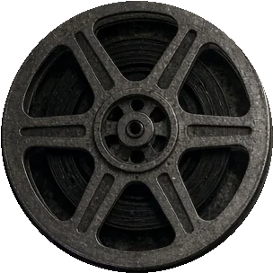
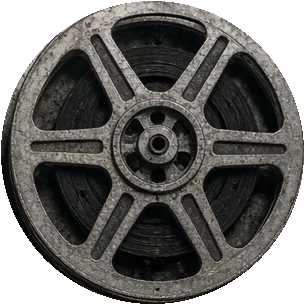
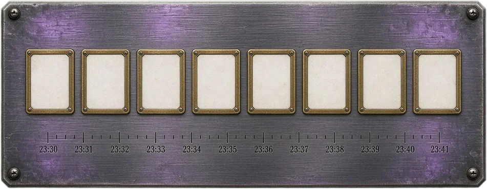
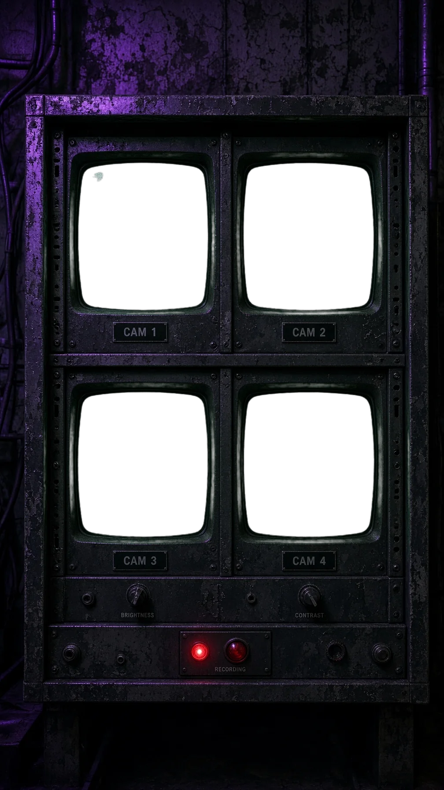
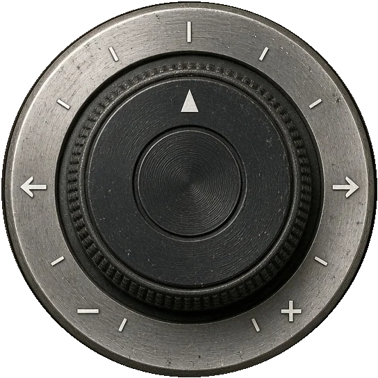
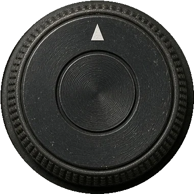

В 23:36 с той стороны что-то начало давить на кольцо. Перегрузка, сброс не прошёл — и шестеро остались в контуре, чтобы не пустить это сюда.
Пусти… вы же звали…



За минуту до вспышки в лаборатории было семеро. Седьмой стоял у пульта — и смотрел прямо в камеру.